Studio
Arrange the background, lighting, and props, and save the camera and scene to be shot. The screen’s color tone and lens effects are explained separately in Effects.
Scene
Avatar Placement
| Control | Things that change |
|---|---|
| Position X | Move left and right. |
| Position Y | Move up and down. |
| Position Z | Moves forward and backward. |
| Rotation | Changes the direction the avatar is facing. |
| Size | Makes the avatar in the scene bigger or smaller. |
| Brightness | Adjusts the brightness applied to the avatar. |
| Center | Returns the avatar to the default position. |
Multiple Avatars (Pro)
Add additional avatars to place more characters in the same scene. After selecting an avatar, changing the control target will switch which character receives your tracking input.
- Same Action: Multiple avatars move together with the same tracking input.
- Lip Sync All: Moves the mouths of multiple avatars together.
- Lip Sync Main: Only the main controlled avatar moves its mouth.
- Lip Sync Off: Does not use shared lip sync.
Posing (Pro)

- In the Studio → Pose, turn on Pose Mode.
- Select a bone and drag the rotation ring or move the hands and feet.
- Press Complete to save the posture.
- Apply it in the detail card of the avatar menu.
| Operation·Button | Result |
|---|---|
| Bone Selection·Rotation | Changes the direction of the selected joint. |
| Hand and foot drag | Move the end point so that the arms or legs follow. |
| Alt+Drag | Changes the direction the elbows and knees are facing. |
| Symmetric Editing | Changes the other side as well. |
| Flip Left/Right | Changes the left and right sides of the pose. |
| Fixed | Prevents the selected bone from moving during tracking and animation. |
| Stick to the floor | Place your feet on the floor. |
| Complete | Save the created pose. |
| Discard | Exit without applying the edited posture. |
Pose Library (Pro)

- Studio → Posing → Open the Pose Library.
- Select the folder that contains the
.animfile. - Select a pose thumbnail and apply it.
- Press Cancel to go back.
You can find frequently used poses through search and favorites, and correct and save them in posing mode through editing.
Object (Pro)
You can use text, images, shapes, and .vprop 3D models.

- Add Object: Place text, images, shapes, and 3D props.
- World Fixed: Objects stay in place even if the avatar moves.
- Attach to Avatar/Bone: Moves along with the body, hands, or head.
- Offset: Slightly move or rotate from the attachment point. Used to adjust the position of items held in hand.
- Avatar-Owned: Follows the avatar even when moving to another scene.
- Studio-Owned: Remains in the current scene.
The usage rights for props and avatars follow the original creator’s terms respectively. For more details, see Avatars and Props.
Room

Choose a room preset to place the background space. Adjust the position, rotation, and scale to fit the stage and avatar. For extra rooms bought on BOOTH, see DLC room packs.
DLC room packs
New in 2.2.0; not available in 2.1.2 or earlier.
When you buy additional content (DLC) on BOOTH, more rooms appear in the Studio's room list. This pack includes a Japanese alley (day and night), a Japanese apartment, a school pool, a showroom gallery, classrooms (Classroom 01 and 02 by day, evening and night, plus Ver02) and a coworking office.
| Edition | DLC rooms | Built-in rooms / room piece editing |
|---|---|---|
| Basic + DLC | Available | Not available |
| Pro + DLC | Available | Available |
DLC rooms do not show in the room list until you buy the DLC.
Buy and register in the app
- Buy the DLC product on BOOTH. It is a separate product from the license, so order it separately.
- In the app, open Settings → License.
- Press Enter another code and enter the BOOTH order number. It is the same field where you enter a license code.
- When a notice says the rooms are open, you are done. Your current license stays as it is.
A DLC order does not change your license; it only adds the right to download the room pack on this PC. One purchase is used on one PC, and you can move it to another PC once. Do not show your order number to anyone.
Download rooms
- Open Studio → Room.
- Room cards you have not downloaded yet show Download · size. Press the card to start the download.
- When the progress bar finishes, the room opens in the scene.
Press × during the download to stop it, and press the card again to continue. A downloaded room works just like a built-in room.
| On a downloaded room card | What it does |
|---|---|
| Right-click → Delete | Deletes the room files from your PC. Your right stays, so you can download it again at any time. |
| Update mark | A new version is out. Download it with right-click → Update. |
What changes when you choose a room
A DLC room carries the lighting and mood of its original scene.
- When you choose the room, the Studio's ambient light, reflection strength and fog change once to the room's values. After that you can change them freely in your own scene settings, and switching rooms does not undo your changes.
- The room's lamp lights are in the room settings. Use the Lamp lights switch to turn them all on or off, and Brightness to set the overall brightness from 0 to 3 times. With lights by area, you can turn on only some of them, such as the living room lights.
- The room's lamp lights only light the room; they do not shine on the avatar. Set the avatar's brightness in Lighting.
- The room's light settings are saved in the scene together with the room.
Walls that block the camera
Turn on Hide what blocks the camera to leave out of the picture the walls between the broadcast camera and the avatar, and what hangs on those walls. Their shadows and lights stay. It is on by default.
Tips
- Large rooms such as the alley take a little time to open the first time.
- The coworking office opens among the desks inside the office.
- The avatar starts at the spot the pack sets in the room. You can move it with position, rotation and size.
Camera (Pro)

- Camera → Press + on Studio Camera to create a camera.
- Click the camera name to expand detailed settings.
- Adjust the target, position, gaze, and lens.
- Select the camera as the broadcast target.
Turn on Grab to see the camera in the scene view and move or turn it like a prop. Grab and Put on the current view are in the first line of each camera's settings and in the camera's ⋯ menu. To keep the current working composition, use Put on the current view.
Position Mode

| Option | How the camera moves |
|---|---|
| Stay | Remains at the set position. Does not follow the avatar if it moves. |
| Follow Target | Attaches to the selected bone or point. If you choose the head, it may enter inside the head. |
| Following at a Distance | Follow while maintaining a position X, Y, Z away from the target. |
| Orbiting the Target | Move around the target at a set distance. Change the front/side composition by ring angle. |
- Target: Choose the reference points for the avatar to follow, such as head or body.
- Distance X, Y, Z: Determine how far the camera stays from the target horizontally, vertically, and front/back.
- Smoothness: Higher settings follow slowly and reduce shaking, lower settings respond immediately.
Rotation Reference
| Option | When the Avatar Turns |
|---|---|
| World Coordinates | The camera’s relative direction remains based on the scene. |
| Simple Follow | Move following behind the target. |
| Follow Target Rotation, Keep Up as World | Follow left-right rotation, but keep the top of the screen upright. |
| Rotate, No Roll | Follow left-right and up-down rotation, but do not follow head tilt. |
| Fixed to Target | The camera position rotates with the target’s full rotation, including head tilt. |
These settings determine the camera positioning. To keep the face on screen, also choose the gaze method below.
Gaze Method

| Option | Where the Lens Looks |
|---|---|
| Fixed | Continuously look in the specified direction. |
| With target | Rotates together in the direction the target is looking back. |
| Focus on target | Continually looks at the selected face or point. |
| First-person | Views as the person’s perspective based on the starting angle. |
| Screen composition | Adjusts direction to place the target at a specific position on the screen. |
- Aim point: Moves the focus point on the target to X·Y·Z coordinates.
- Screen position: 0.5 for horizontal and vertical is the center. Changing the value places the avatar in a different position on the screen.
- Gaze smoothness: Increasing makes the lens direction change slowly, decreasing makes it follow immediately.
Lens and transition
| Item | Changing value does |
|---|---|
| Field of view | Lowering makes it zoom in like telephoto, raising makes it capture wide like wide-angle. |
| Orthographic size | Raising captures more widely and makes the avatar smaller. |
| Near clipping distance | Objects closer than this distance are not rendered. Raising may cut off faces or props. |
| Far clipping distance | Objects farther than this distance are not rendered. |
| Aspect ratio | Changes the screen shape, e.g., horizontal broadcast or vertical video. |
| Shake intensity | Increasing makes it feel like handheld shooting. 0 means no shake. |
| Shake speed | Increasing makes it shake faster. |
| Cut | Instantly switches to another camera. |
| Crossfade | The two camera screens overlap and change during the transition time. |
Director and Multiview

- Director Mode: Switch cameras to configure the broadcast screen.
- Multi-view: View previews from multiple cameras in one place. Turn it on with a separate switch.
- Grid: Increasing it allows you to see more cameras at once, and each cell becomes smaller.
- Downsampling: Increasing it reduces both preview quality and the load on the PC.
- Refresh rate: Lowering it makes previews less smooth and reduces the load on the PC.
- Automatic switching: Selects the next camera based on tags and weights. Cameras with a weight of 0 will not be automatically selected.
- Spout2 per camera: Sends the selected camera video to OBS under a separate name. You can output up to 3 additional streams.
Save Scene

- Adjust the background, lighting, avatar, and camera to the desired state.
- Save it on the scene card.
- Next, selecting a thumbnail will load the composition of that scene.
A scene also remembers the avatar's position and pose, and opening it brings them back. Switching to another avatar inside a scene makes that avatar the scene's avatar. Going back to the avatar list with unsaved changes asks whether to save them.
| Item | What it does |
|---|---|
| New Scene | Create a new scene composition. |
| Save | Records the current batch and settings. |
| Thumbnail | Loads the saved scene. |
| Search | Find scenes by name. |
| ⋯ Menu | Opens commands for the scene, such as Rename or Duplicate. |
Background

| Select | Visible Result |
|---|---|
| Solid Color | Fills the background with a uniform color. |
| Green | This is a background that can be removed with chroma key in OBS. Choose a color different from your outfit. |
| Transparent | Composites without a background in Spout2·NDI. The receiving side must also support alpha compositing. |
| Image | Use PNG·JPG pictures as the background. |
| Sky | Uses a sky scene as the background. |
Zooming in or out of the image changes the size of the picture, while moving it left/right or up/down changes its position. Turning on Fill crops and fills the edges while maintaining the ratio.
The camera screen decorations that look like a phone or camcorder have moved to the Studio → Photo & Recording tab. See Photo & Recording.
Lighting

Choose the overall mood with a preset, and press individual lights for detailed adjustments. Preset lists are folded by kind, with your own saved presets at the top.
| Item | Effect when changed |
|---|---|
| Intensity | Increasing it makes it brighter. If too high, skin and hair may appear washed out. |
| Color | Changes the color of the light shining on the avatar. |
| Color Temperature | Lower gives a more orange tone, higher gives a bluer tone. |
| Range | Makes the light from point or spot lights reach farther. |
| Spot Angle | Narrower illuminates a specific area, wider covers the surroundings. |
| Shadow Strength | Higher makes the shadows darker. |
| Shadow Softness | Higher blurs the edges of the shadows. |
| Ambient Light | Brightens areas not directly hit by the lights. |
Position and Target

- Follow Position: The light follows the avatar or bones when they move.
- Look at Target: Turn the light toward the target.
- Smoothness: Increasing it makes the light less responsive to small shakes of the target.
- Light Group: Combine multiple lights to change position, rotation, and brightness together.
- Volumetric Spot (Pro): Creates a beam of light in the air. Increasing the density makes the light beam more intense.
Effects
Open Studio → Effects. Click an effect's heading to expand its controls, then turn on the switch on the right to apply it.
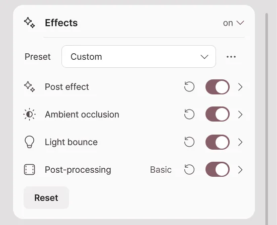
| Effect group | Editions |
|---|---|
| Post-processing | Basic / Pro |
| Advanced post effects | Pro |
| Ambient occlusion | Pro |
Bloom and depth of field appear in more than one group. Start by enabling one effect from one group at a time and compare the result. The reset icon in a heading resets that group; Reset at the bottom restores all effects.
Post-processing
Adjust common colors, highlights and camera lens effects.
Anti-aliasing
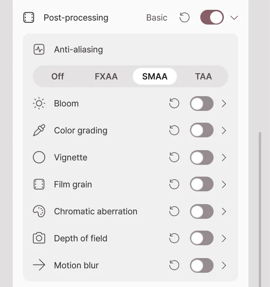
Smooths jagged edges on hair and clothing.
| Option | Visible result |
|---|---|
| Off | Disables edge smoothing. |
| FXAA | Lightweight smoothing, but may slightly soften fine patterns. |
| SMAA | Smooths outlines while retaining more detail. |
| TAA | Stabilizes the image over time; moving objects may leave ghosting. |
Bloom
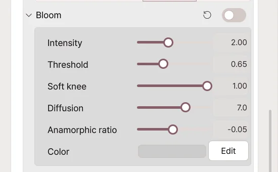
Makes light spread around bright hair, glowing materials and accessories.
| Control | When increased |
|---|---|
| Intensity | The glow becomes stronger. |
| Threshold | Only brighter areas bloom; lower values let ordinary surfaces glow too. |
| Soft knee | The transition around the brightness threshold becomes gentler. |
| Diffusion | Light spreads across a larger area. |
| Anamorphic ratio | Stretches the glow horizontally or vertically. |
| Color | Sets the glow color. |
Color grading
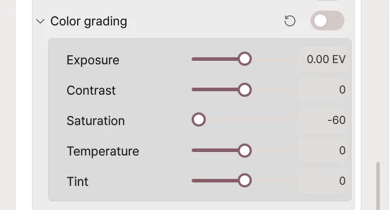
| Control | Effect |
|---|---|
| Exposure | Higher brightens the whole image; lower darkens it. |
| Contrast | Increases the difference between highlights and shadows. |
| Saturation | Increases color intensity; lowering it approaches black and white. |
| Temperature | Lower appears cooler; higher gives a warmer tone. |
| Tint | Balances between green and magenta casts. |
Vignette
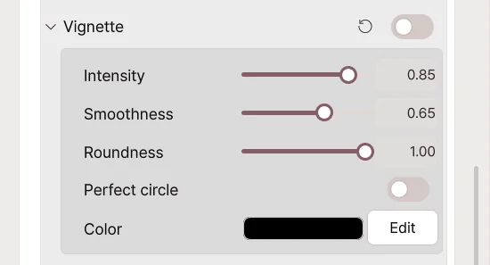
Darkens the edges of the image to draw attention to its center.
- Intensity: Higher makes the edges darker.
- Smoothness: Higher spreads the transition over a wider region.
- Roundness: Changes the shape of the vignette.
- Color: Sets the color blended into the edges.
Film grain
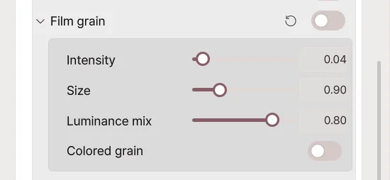
Adds fine film-like particles to the image.
- Intensity: Makes the grains more visible.
- Size: Makes the grains larger.
- Colored: Uses colored instead of monochrome grain.
Chromatic aberration
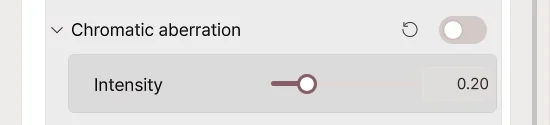
Separates red, green and blue near edges to simulate a lens defect. Greater intensity increases the separation.
Depth of field
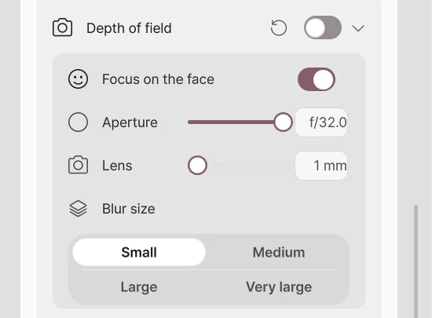
Keeps the face in focus while blurring objects in front of and behind it.
| Control | Effect |
|---|---|
| Auto face focus | Tracks a moving face when enabled. |
| Focus distance | Sets the sharp distance when automatic focus is off. |
| Aperture | A lower f-number gives stronger foreground/background blur. |
| Focal length | Longer lenses make out-of-focus areas blur more easily. |
| Blur quality | Produces smoother blur but increases PC/GPU load. |
If the f-number is too low or focus distance is wrong, the face itself can become blurry.
Motion blur
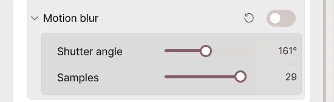
Adds trails to fast movement.
- Shutter angle: Higher creates longer motion trails.
- Sample count: Higher produces smoother trails but increases PC/GPU load.
Advanced post effects (Pro)
A separate camera-effects group powered by Beautify. It appears as Post Effects in the UI.
Color and tone
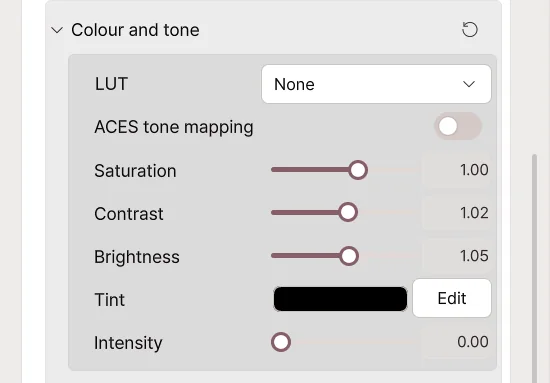
| Control | Effect |
|---|---|
| LUT | Chooses a preset color-look filter. |
| LUT intensity | Strengthens the filter's color treatment. |
| ACES tonemapping | Changes how highlights and shadows are represented. |
| Saturation | Increases the strength of colors. |
| Contrast | Changes the gap between bright and dark areas. |
| Brightness | Adjusts overall brightness. |
| Tint color / intensity | Blends in a chosen color. At intensity 0, the color remains invisible. |
Sharpening and dithering
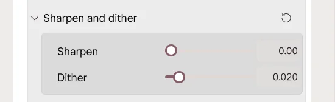
- Sharpen: Makes outlines crisper. 0 disables it; excessive sharpening can make edges look rough.
- Dithering: Adds small noise to reduce visible color bands in smooth gradients.
Bloom
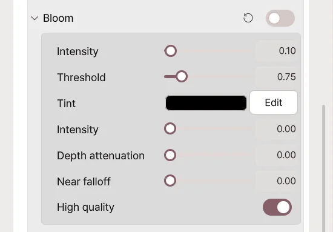
- Intensity: Strength of the glow.
- Threshold: Higher limits bloom to brighter pixels.
- Tint / intensity: Color and amount added to the glow.
- Distance attenuation: Reduces bloom on distant objects.
- Near attenuation distance: Defines how nearby bloom should fall off.
- High quality: Improves the glow at additional processing cost.
Anamorphic flares
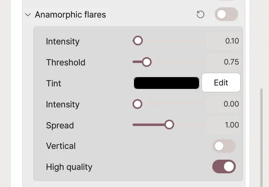
Creates long shafts of light extending from bright areas.
- Intensity: Brightens the shafts.
- Threshold: Higher limits the effect to brighter areas.
- Spread: Extends the light streaks farther.
- Vertical: On produces vertical streaks; off produces horizontal ones.
- Tint / intensity: Sets their color and tint strength.
Depth of field
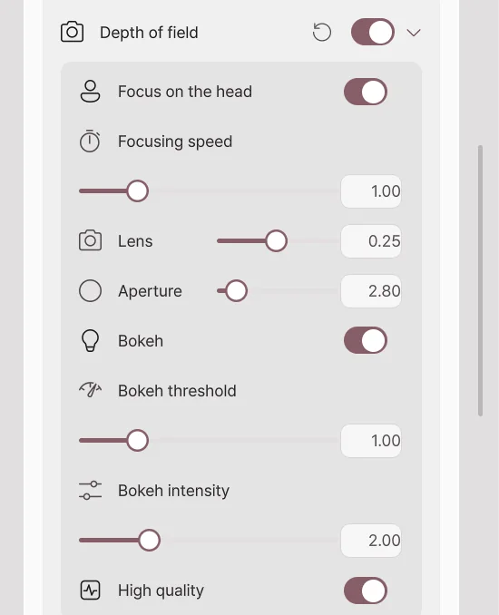
- Auto head focus: Follows the avatar's head.
- Focus distance: Manually sets the sharp distance when auto focus is off.
- Focus speed: Higher focuses on moving targets faster.
- Lens / aperture: Control how much of the scene is blurred.
- Bokeh: Turns blurred highlights into circular light spots.
- Bokeh threshold: Higher limits spots to brighter highlights.
- Bokeh intensity: Controls the spots' brightness.
Enabling Blur below turns this depth-of-field effect off.
Chromatic aberration
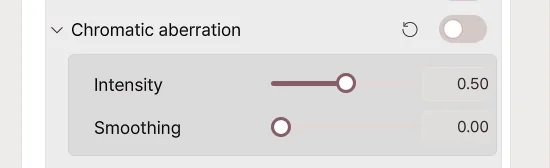
- Intensity: Increases the color separation around outlines.
- Smoothing: Softens how that separation changes across the image.
This effect is disabled when the background is transparent.
Lens dirt
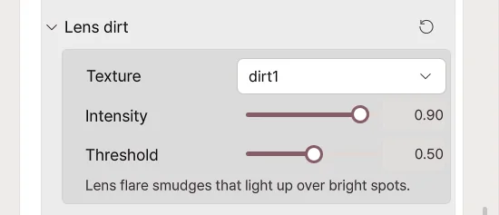
Overlays smudges on bright areas to simulate a dirty lens.
- Texture: Choose a dirt pattern; None disables it.
- Intensity: Makes the pattern more visible.
- Threshold: Brightness needed for the dirt effect.
Vignette
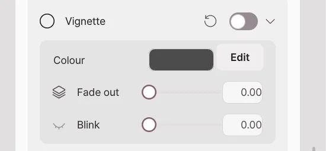
- Color: Edge color.
- Edge fade: Amount of darkness at the edges.
- Blink: Controls a closing-eye-like screen-cover effect.
Night vision
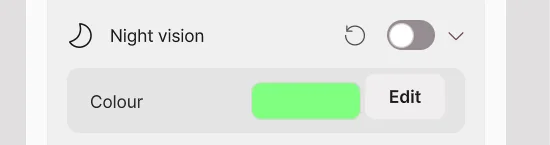
Creates a night-camera appearance in a chosen color. Enable its switch, then choose the effect color.
Blur
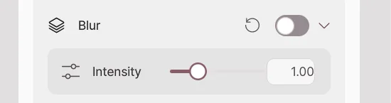
Blurs the entire picture. Increasing strength makes everything softer. To keep the face sharp while blurring the background, use Depth of Field instead.
Pixelation
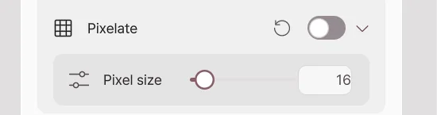
Turns the picture into large square pixels. Higher pixel size creates a coarser mosaic.
Ambient occlusion (Pro)
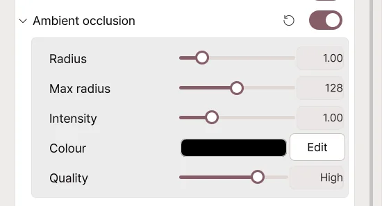
HBAO adds contact shadows where surfaces are close, such as under the chin, in clothing folds or at the corners of a room.
| Control | When increased |
|---|---|
| Radius | Shadows extend over a larger region. |
| Maximum radius | The maximum area used to calculate shadows grows. |
| Intensity | Contact shadows become darker. |
| Color | Changes the color of the shadows. |
| Quality | Shadows become smoother at a greater PC/GPU cost. |
If the eyes or nose become excessively dark, lower intensity or radius.
Compare before and after
These examples show the same avatar and framing with actual effect values changed.


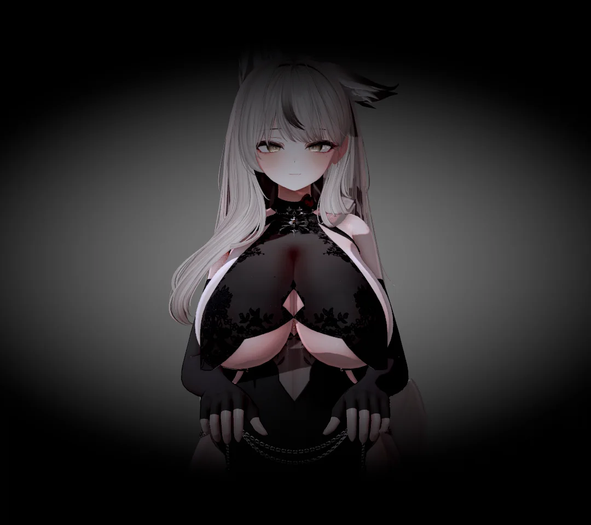
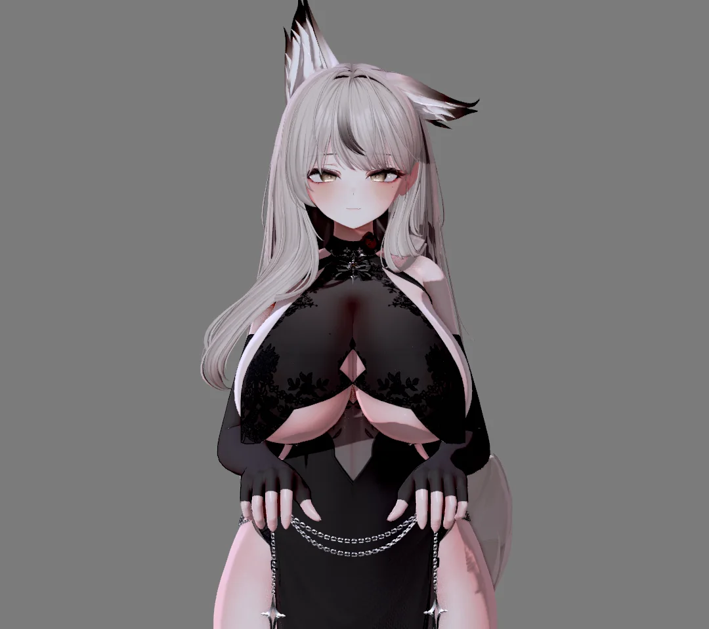
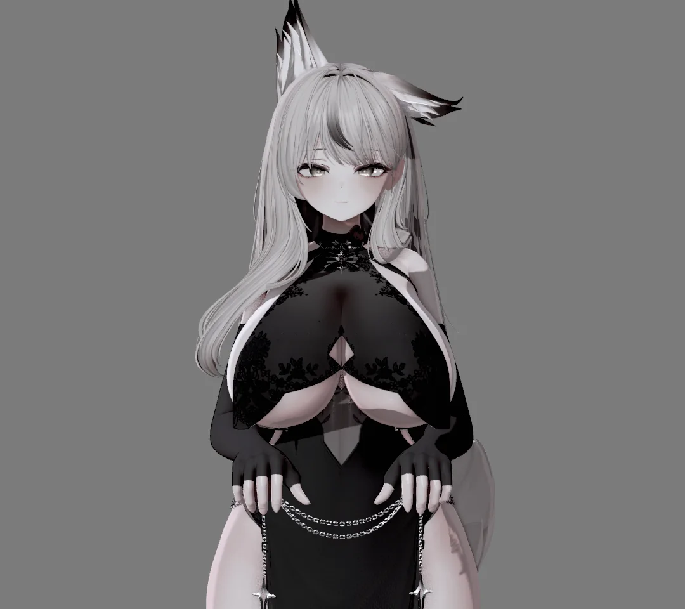
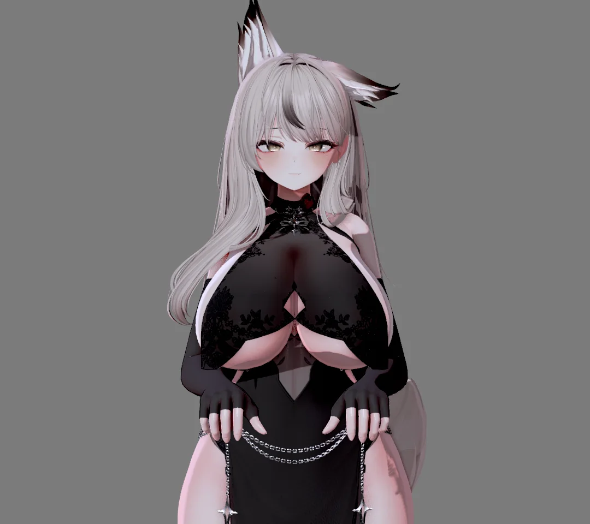
My expressions
The Avatar Menu's My expressions card is here too. See My expressions for how to make one.
Photo & Recording
The Studio → Photo & Recording tab holds the camera screen, photo and recording, in that order.

- Camera screen: Choose screen decorations that look like a phone or camcorder, and their ratio and style.
- Photo: Saves the current output screen as a PNG.
- Crop: Cuts the area to include in the photo.
- Ratio: Chooses the shape of the photo such as landscape, portrait, or square.
- Resolution: Sets the pixel count of the saved file.
- Recording (Pro): Saves video as MP4. Press stop after starting to complete the file.
- Mic sound: When on, your microphone and, while screen sharing, the shared game's sound are mixed into one track. When off, only the game's sound goes in; without screen sharing, the video is recorded without sound.